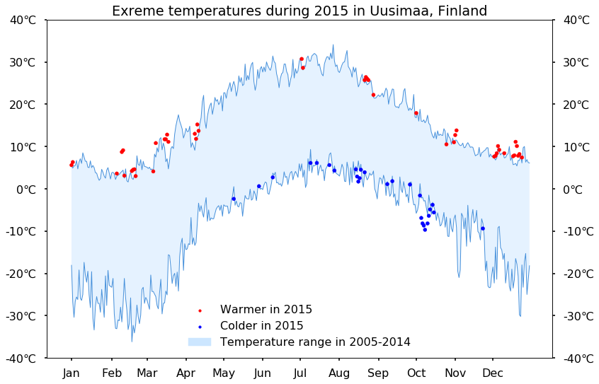

Visualization for extreme temperatures during the year 2015
compared to range of deviation between temperatures during the
period 2005-2014 in Uusimaa, Finland. The data was automatically collected
from 21 weather stations by the teaching platform of University of Michigan.